Березка
Очки туз - 4 очка, король - 3, дама - 2 и валет - 1.
Cуществуют два вида равномерного расклада(РР): 4-4-3-2 и 4-3-3-3.
Трехцветом называется расклад карт: 4-4-4-1 или 5-4-4-0.
Конвенционная заявка "Блэквуд" - вопрос о тузах и королях при шлемовой торговле.
Мажорные масти: черви, пики. Минорные масти: трефы, буби. Старшинство мастей от младшей: трефа, бубна, черва, пика.
Фит - 8 карт в некоторой масти.
"Полуфит" - 7 карт в некоторой масти.
Сокращения и обозначения:
- ФК (форсирует на круг)
- ФГ (форсирует до гейма)
- ИЗ (искусственная заявка) т.е. не отражает длину или силу заявленной масти
- БК (без козыря)
- НСР
Статистические таблицы:
info
| Уровень контракта | Необходимые очки | |
| с козырем | без козыря | |
| 1-2 | 1 | 19-23 |
| 3 | 2 | 22-24 |
| 4 | 3 | 25-27 |
| 5 | 4 | 28-30 |
| 6 | 5 | 31-33 |
| 7 | 6 | 34-37 |
| 7 | 7 | 38-40 |
Общие правила натуральной торговли.
- "Подъем" масти партнера означает наличие фита. Cначала согласовывается мажорный фит. Поскольку открытие "одна черва" предполагает у открывающего не менее пятерки карт червонной масти, ответ "две червы" будет означать, что у партнера не менее трех карт червовой масти, то есть всего на линии не менее восьми карт, что составляет желанный фит.
- Если партнер открывающего не показал фит в мажоре, это означает, что на линии (если у открывающего ровно пять мажорных карт) может быть в лучшем случае "полуфит" - семь карт мажорной масти.
- Каждое повторное заявление масти удлиняет ее на одну карту.
- При двух разных по длине мастях сначала показывают более длинную.
- В отсутствие фита на первом круге отвечающий показывает свою масть от четверки.
- Любая новая масть показывается, начиная с четырех карт в данной масти.
- Заявление новой масти на первом уровне форсирует партнера на круг.
- Заявление новой масти на втором и следующих уровнях не форсирует партнера на круг.
- Показ минорной пятерки и вообще любой ответ в миноре (даже фит) отрицает наличие мажорной четверки.
- При двух четырехкарточных мастях сначала показывают младшую. В случае, когда одна масть минорная, а другая мажорная, предпочтение необходимо отдавать мажорной масти.
- При двух пятикарточных мастях сначала называют старшую.
- Если в торговле мы перешли уровень "без козыря", то новая масть показывается от пятерки карт.
- Если в процессе торговли вы уже показали все свои масти и их длины, а очков на линии достаточно, покажите "без козыря", отдавая при этом инициативу партнеру.
- В торговле показывают только те масти, в которых может быть фит. Если анализ торговли показывает, что в некоторой масти фита на линии быть не может, то и показывать ее не следует.
- Если известно, что у партнера не более, например, трех карт в некоторой масти, то предлагать новую масть можно только от пятерки карт.
- Не считайте эти правила догмой.
Открытия
1C 1 "Одна трефа". warning Продолжение
"Одна трефа". warning Продолжение
"Одна трефа". warning ПродолжениеИскусственная заявка
Назначаем данное открытие в трех случаях:
- при 12-15 очках равномерного расклада;
- при 12-15 очках расклада 5-3-3-2 с минорной пятеркой;
- при наличии 17 и большего числа очков при произвольном раскладе;
Исключение! При 17-18 очках равномерного расклада или при раскладе 5-3-3-2 с любой минорной пятеркой мы всегда открываемся через "один без козыря".
Примеры
2-4-4-3:  10 9
10 9  Д В 9 2
Д В 9 2  Т Д В 5 К 10 6
Т Д В 5 К 10 6
10 9 Д В 9 2 Т Д В 5 К 10 6 2-3-5-3: 10 9 Д В 9 Т Д В 8 5 К 10 6
10 9 Д В 9 Т Д В 8 5 К 10 6 2-3-3-5: 10 9 Д В 9 Т Д В К 10 8 6 3
10 9 Д В 9 Т Д В К 10 8 6 3 3-3-3-4: 10 9 5 Д В 9 Т Д В К 6 4 2
10 9 5 Д В 9 Т Д В К 6 4 2 3-0-6-4: 10 9 5 - Т К Д В 6 4 Т К 8 6
10 9 5 - Т К Д В 6 4 Т К 8 6 Антипримеры
5-2-3-3: Т В 10 9 5 Д В К 6 4 К 8 6 (мажорная пятерка при 14 очках) нужно играть "Одна пика".
Т В 10 9 5 Д В К 6 4 К 8 6 (мажорная пятерка при 14 очках) нужно играть "Одна пика".3-2-5-3: В 10 9 Д В Т К Д 6 4 К 8 6 (16 очков расклада 5-3-3-2 с минорной пятеркой) нужно играть "Одна бубна".
В 10 9 Д В Т К Д 6 4 К 8 6 (16 очков расклада 5-3-3-2 с минорной пятеркой) нужно играть "Одна бубна".4-2-5-2: В 10 9 5 Д В Т Д 6 5 4 К 6 (два дублета при 13 очках) нужно играть "Одна бубна".
В 10 9 5 Д В Т Д 6 5 4 К 6 (два дублета при 13 очках) нужно играть "Одна бубна".1D 1 "Одна бубна". Продолжение
"Одна бубна". ПродолжениеЭто натуральная заявка, показывающая, что у открывающего нерегулярный расклад, нет мажорных пятерок, от 12 до 16 очков и не менее четырех карт бубновой масти.
Примеры
2-2-5-4: 10 9 Д В Т Д В 5 4 К 8 6 3
10 9 Д В Т Д В 5 4 К 8 6 3
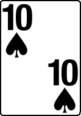
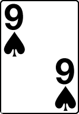

 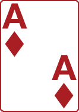
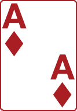

 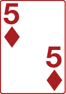
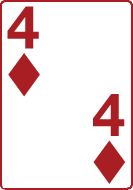
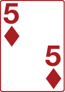
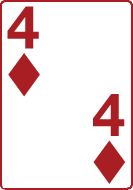
 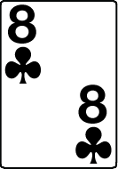
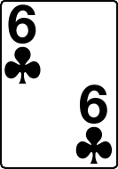
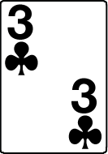
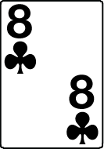
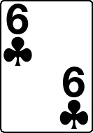
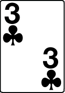
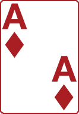
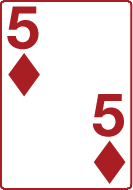
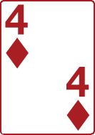
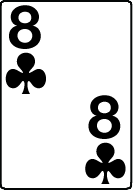
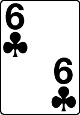
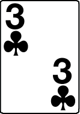
4-4-4-1: В 10 9 5 Д В 9 2 Т Д В 4 К
В 10 9 5 Д В 9 2 Т Д В 4 К  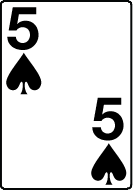
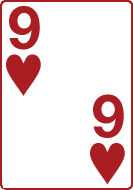
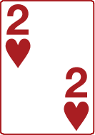
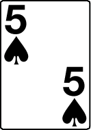
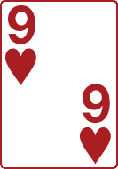
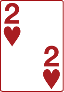
Антипримеры
1 "Одна черва". Продолжение
"Одна черва". ПродолжениеНатуральная заявка, свидетельствующая о том, что у открывающего от 12 до 16 очков и не менее пяти карт червей.
Примеры
Т В 9 К Д В 9 8 Д 4 К 8 2Т В 9 Т Д В 9 8 2 6 10 8 6Антипримеры
Т К Д Т К Д В 8 6 Д 5 Т Д (с такими сильными картами надо было открываться "одной трефой") 1 "Одна пика". Продолжение
"Одна пика". ПродолжениеНатуральная заявка, свидетельствующая о том, что у открывающего от 12 до 16 очков и не менее пяти карт пик.
А что если у нас 12-16 очков и две мажорные пятерки - пиковая и червонная одновременно? Правило натуральной торговли гласит, что в этом случае сначала показывается старшая - пиковая масть. При двух мажорных мастях разной длины сначала показывают более длинную.
Примеры
5-5-0-3: Т К В 9 7 Т В 9 8 2 - 10 8 6
Т К В 9 7 Т В 9 8 2 - 10 8 6Антипримеры
5-6-1-1: Т К В 9 7 Т В 9 8 4 2 7 10 (черва длиннее - открытие "одна черва")
Т К В 9 7 Т В 9 8 4 2 7 10 (черва длиннее - открытие "одна черва") 1 БК "Одна без козыря". Продолжение
Натуральная заявка и назначается при 16-18 в очках в двух случаях:
- при равномерном раскладе;
- при раскладе 5-3-3-2 с минорной пятеркой. Наличие 17 или 18 очков является тем самым исключением, которое упоминалось в открытии "одна трефа". Таким образом, при 17-18 очках равномерного расклада или при раскладе 5-3-3-2 с любой минорной пятеркой мы всегда открываемся через "один без козыря".
Заметим, что при 16 очках и раскладе 5-3-3-2 с бубновой пятеркой мы имеем право также открыться "одной бубной". В этом случае самая простая рекомендация - полагаться на здравый смысл. Если сильная бубновая масть - так и открывайтесь спокойно "одной бубной". Если очки разбросаны по мастям - нет смысла информировать партнера о слабой минорной масти.
Примеры
Т К В 7 Т Д В 8 7 3 Д 10 8 Т К В Т Д В 8 7 Д 10 8 6 4Антипримеры
3-3-2-5(25): Т К В Т Д В Т 8 К Д 10 8 6 (с такими картами надо было открываться сильным вариантом)
Т К В Т Д В Т 8 К Д 10 8 6 (с такими картами надо было открываться сильным вариантом)4-3-1-5(18): Т К В 7 Т В 10 8 К Д 10 8 6 (18 очков, но неравномерный расклад и не 5-3-3-2).
Т К В 7 Т В 10 8 К Д 10 8 6 (18 очков, но неравномерный расклад и не 5-3-3-2). 2 "Две трефы". Продолжение
"Две трефы". ПродолжениеНатуральная заявка, которая при 12-16 очках назначается при наличии:
- не менее шести карт трефовой масти в отсутствие мажорных пятерок;
- пятерки треф и любой мажорной четверки.
- не менее шести карт трефовой масти в отсутствие мажорных пятерок;
- пятерки треф и любой мажорной четверки.
Примеры
3-3-1-6: 10 6 3 Т В 10 8 Т К Д 10 8 б (шесть треф и нет мажорных пятерок)
10 6 3 Т В 10 8 Т К Д 10 8 б (шесть треф и нет мажорных пятерок) 4-1-3-5: К В 9 5 2 Д 6 3 Т К В 8 4 (пять треф и четыре пики)
К В 9 5 2 Д 6 3 Т К В 8 4 (пять треф и четыре пики)Антипримеры
К В 9 7 5 - Д 6 Т К В 8 4 3 (имея мажорную пятерку, следовало открыться "одной пикой")
2 "Две бубны". warning Продолжение
"Две бубны". warning ПродолжениеЭто искусственная заявка, которая назначается при наличии от 12 до 16 очков в случае "трехцвета без бубновой масти".
info
Трехцветом называется расклад карт 4-4-4-1 или 5-4-4-0.
Для данного открытия расклад 5-4-4-0 используется только при трефовой пятерке.
Заметим, что при раскладе 5-4-4-0 с бубновым ренонсом, трефовой пятеркой и мажорной четверкой можно открыться и "двумя трефами", однако делать это следует лишь при сильной трефовой масти. В этом случае вы ничего не скажете партнеру о раскладе карт, зато сообщите о длине трефовой масти.
Примеры
4-4-1-4: К В 9 5 К 6 5 3 Д Т В 4 3
К В 9 5 К 6 5 3 Д Т В 4 34-4-0-5: К В 9 5 К 6 8 3 - Т В 8 4 3
К В 9 5 К 6 8 3 - Т В 8 4 3Антипримеры
К В 9 К 6 5 3 - Т В 9 7 4 3 (с трефовой шестеркой надо было открыться "двумя трефами"). 2 "Две червы". Продолжение
"Две червы". ПродолжениеНатуральная заявка, которая назначается при наличии от 9 до 11 очков при длине червонной масти не менее шести карт.
Примеры
4-6-2-1(9): К 6 5 3 К В 9 5 4 3 Д 3 4
К 6 5 3 К В 9 5 4 3 Д 3 4Антипримеры
2 "Две пики". Продолжение
"Две пики". ПродолжениеНатуральная заявка, которая назначается при наличии от 9 до 11 очков при длине пиковой масти не менее шести карт. А если удача послала вам две мажорные шестерки и 9-11 очков? Как быть? Давайте вспомним случай двух мажорных пятерок при 12-16 очках. В обеих ситуациях при равенстве длин мастей сначала показывается старшая масть - пиковая. При раскладе 7-6-0-0 сначала показывается более длинная масть.
Примеры
Антипримеры
2 БК "Две без козыря". Продолжение
Натуральная заявка, которая назначается при силе руки от 9 до 11 очков при наличии двух пятерок. Пятерки могут быть в разных мастях, не обязательно в мажорных.
Примеры
2-1-5-5(10): 6 5 4 К В 9 5 2 Т Д 10 7 4
6 5 4 К В 9 5 2 Т Д 10 7 4Антипримеры
Ответы
Ответы на 1D 1 "Одна бубна".
"Пас"- при 0-7 очках.
Ответы на 1D 1
Ответы на 1
Ответы на 1
Ответы на 1
Ответы на 2
Ответы на 2
Ответы на 2
"Одна черва"- не менее четырех карт червонной масти и от 7 очков. ФК. Данная заявка является форсирующей: партнер (открывающий) не должен пасовать. Продолжение ->
"Одна пика"- не менее четырех карт пик и от 7 очков. Продолжение ->
"Две червы"- не менее пяти карт червонной масти и от 12 очков. Данная заявка форсирует партнера до гейма.
"Две пики"- аналогичная заявка: не менее пятерки пик и от 12 очков, ФГ. В соответствии с правилами натуральной торговли в случае, когда сила руки составляет не менее семи очков, при наличии мажорной четверки вы обязаны ее показать в первую очередь. Если отвечающий не ответил мажорной заявкой, то открывающий имеет право сделать вывод, что у партнера отсутствуют мажорные ценности. В отсутствие мажорных четверок при более или менее равномерном раскладе возможны следующие ответы:
"Один без козыря"- 8-10 очков.
"Два без козыря"- 11-12 очков.
"Три без козыря"- 13-I5 очков.
При наличии фита (в данном случае - бубновой четверки) приняты следующие ответы:
"Две бубны"- при 7-9 очках.
"Три бубны"- при 10-11 очках.
Также два ответа существует в ситуации, когда партнер имеет не менее пяти треф:
"Две трефы"- не менее 10 очков. Данная заявка форсирует партнера на круг.
"Три трефы"- не менее 16 очков. В отличие от предыдущей заявки, данная форсирует партнера не бросать торговлю до того, как будет заказан гейм.
На все ответы, за исключением "одной пики" и "одной червы", конвенционных продолжений нет.
Ответы на 1D 1 "Одна бубна". -> 1 "Одна черва". или 1 "Одна пика".
"Одна пика"- ровно четыре пики и 12- 14 очков. Естественно, что данная заявка может быть высказана только после ответа "одна черва".
"Две пики"- также ровно четыре пики, но 15-16 очков.
"Две червы"- ровно четверка червей. Данная заявка, как и три последующие, ничего не говорит о силе руки открывающего.
"Две бубны"- не менее шести карт бубновой масти.
"Один без козыря"- ровно четверка треф и не менее пяти карт бубновой масти.
"Две трефы"- ровно четыре бубны и не менее пяти карт трефовой масти.
"Два без козыря"- длинная бубновая масть и 15-16 очков.
Ответы на 1 "Одна черва".
"Пас" - при 0-7 очках.
"Одна пика"-при 7-10 очках и при наличии не менее 4 карт пиковой масти, ФК (форсирует открывающего на круг).
"Один без козыря" - РР при 7-10 очках. Не забудьте, что в РР входит теперь расклад 5-3-3-2 с минорной пятеркой.
"Две трефы" - искусственная заявка, свидетельствующая, что у вас не менее 11 очков. Данная заявка является вопросом партнеру о силе и раскладе его карт.
"Две бубны" - при 8-12 очках и наличии не менее пятерки карт бубновой масти.
"Две червы" - при 6-9 очках, наличии не менее 3 карт червонной масти (фит, поскольку партнер своим открытием показал не менее 5 карт в данной масти).
"Две пики"-при 12 и большем числе очков и наличии не менее пяти карт пиковой масти, ФГ (форсирует, заставляя партнера не заканчивать торговлю, пока не будет заказан гейм).
Ответы на 1 "Одна черва". -> 2 "Две трефы"
"Две бубны"-12-14 очков и ровно 5 карт в червонной масти, ИЗ (партнер должен ударить пальцем по столу!)
"Две червы" - 12-14 очков и не менее 6 карт червонной масти.
"Две пики"-14-16 очков, ровно 4 карты пиковой масти и не менее 5 карт червонной масти, ФГ.
"Два без козыря"- 14-16 очков и расклад 5-3-3-2, ФГ.
"Три трефы" - 14-16 очков и не менее четверки трефовых карт, ФГ.
"Три бубны" - 14-16 очков и не менее четверки бубновых карт, ФГ.
"Три червы"- 14-16 очков и не менее 6 карт червонной масти, ФГ.
Ответы на 1 "Одна пика".
"Пас" - при 0-7 очках.
"Две пики" - при 6-9 очках и наличии не менее трех карт пиковой масти (фит).
"Две червы" - при не менее 12 очков и от пятерки червей, ФГ (форсирует до гейма).
"Две трефы" - как и в открытии "одна черва", это - искусственная заявка - вопрос партнеру о силе и раскладе его карт. Назначить "две трефы" можно, лишь имея на руках, по крайней мере, 11 очков.
"Две бубны" - при 8-12 очках и наличии не менее пятерки карт бубновой масти.
"Один без козыря" - равномерный расклад (можно с минорной пятеркой расклад 5-3-3-2) при 7-10 очках. Легко убедиться, данное открытие очень близко к "одной черве". Сказывается это и при ответах открывающего на искусственную заявку-вопрос "две трефы".
"Две бубны" - 12-14 очков, ровно пять пиковых карт, искусственная заявка.
"Две червы" означают, что у открывающего: либо 12-14 очков и не менее пятерки червей, либо 14-16 очков и ровно четыре червы.
"Две пики" - 12-14 очков и не менее шести карт пиковой масти.
"Три трефы" - 14-16 очков и не менее четверки трефовых карт, ФГ (форсирует до гейма).
"Три бубны" - 14-16 очков и не менее четырех бубновых карт, ФГ.
"Три червы" - 14-16 очков и не менее пяти червей, ФГ.
"Два без козыря" - 14-16 очков и расклад 5-3-3-2, ФГ.
Ответы на 2 "Две трефы"
"Пас" - при 0-7 очках.
"Две бубны" - искусственная заявка - вопрос партнеру о силе и раскладе его карт. Заявляют "две бубны" только в том случае, если на руках у вас не менее 11 очков. Естественно, что данная заявка, как и все искусственные, форсирует вашего партнера на круг: если последуют три паса, то вам придется играть совершенно ненужный вам бубновый контракт!
"Две червы" - на руках не менее пяти червей и от 8 до 10 очков.
"Две пики" - на руках не менее пятерки пик и от 8 до 10 очков.
"Три трефы" - 9-10 очков и не менее трех карт в трефовой масти.
"Два без козыря" - "неинтересный" расклад (возможно - равномерный, но не обязательно) и 11-12 очков.
Ответы на 2 "Две бубны"
"Две червы" - 12-14 очков и ровно четверка червонных карт.
"Две пики" - 12-14 очков и ровно четыре пиковые карты.
"Три трефы" - 12-14 очков, не менее шести трефовых карт и нет мажорной четверки.
"Три червы" - 14-16 очков и ровно четыре карты в червовой масти.
"Три пики" - 14-16 очков и ровно четверка пиковых карт.
"Два без козыря" - 14-16 очков, не менее шести трефовых карт и нет мажорной четверки.
"Три бубны" - искусственная от 15 очков и выше. ФГ. См. продолжение.
Ответы на 2 "Две бубны" -> 3 "Три бубны"
"Три пики" - искусственная заявка, показывающая 12-14 очков и расклад 4-4-4-0 с минорной (трефовой) пятеркой.
"Три червы" - искусственная заявка при раскладе 4-4-4-1, 12-14 очках и отсутствии фигур в бубновой масти.
"Три без козыря" - аналогичная заявка, отличающаяся от предыдущей наличием по крайней мере одной бубновой фигуры.
"Четыре бубны"- искусственная заявка, которая назначается при 14-16 очках и раскладе 5-4-4-0.
"Четыре трефы"- искусственная заявка, показывает 14-16 очков, расклад 4-4- 4-1 и отсутствие фигур в бубновой масти.
"Четыре червы"- аналогичная заявка, отличающаяся от предыдущей наличием по крайней мере одной фигуры в бубновой масти.
Данные основаны на следующих источниках:
Андрей Семенов aka Absolem © {{ new Date().getFullYear() }}